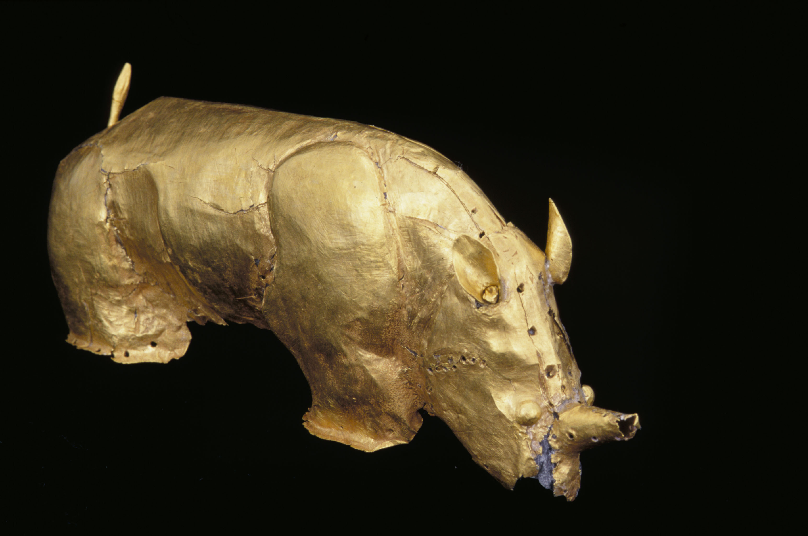

The Golden Rhinoceros of Mapungubwe is a small gold-foil figurine crafted between 1220 and 1290 CE in the Limpopo Valley (Huffman, 2007:42; Meyer, 1998:110). Constructed by hammering thin sheets of gold foil over a carved wooden core and securing them with small gold tacks, the artifact reflects sophisticated metallurgical and artistic techniques within pre-colonial Southern Africa (Miller, 2002:108; Tiley, 2004).
Uncovered during archaeological excavations led by the University of Pretoria at Mapungubwe Hill in 1933, the rhino was recovered from a elite royal grave (Grave 14) atop the hill (Fouché, 1937:85; UP Museums, 2021). In Shona and Venda indigenous cosmological systems, the solitary rhinoceros symbolizes monarchical authority, leadership, and sacred sovereignty (Huffman, 2000:16). The presence of refined gold artifacts alongside imported glass beads and Chinese celadon porcelain provides archaeological proof of Mapungubwe's integration into Indian Ocean trade networks centuries before European contact (Chirikure et al., 2013:34; Pikirayi, 2001:120).
| DC Title | The Golden Rhinoceros of Mapungubwe (Fouché, 1937; UP Museums, 2021) |
|---|---|
| DC Creator | Mapungubwe Kingdom Artisans / Metalworkers (Huffman, 2007) |
| DC Date | 1220–1290 CE (Meyer, 1998; Huffman, 2007) |
| DC Type | Physical Object / Archaeological Artifact (DCMI, 2020) |
| DC Subject | Mapungubwe Kingdom; Iron Age Archaeology; Indigenous Gold Metallurgy; Indian Ocean Trade (Pikirayi, 2001; Chirikure et al., 2013) |
| DC Source | Mapungubwe Royal Burial Site (Grave 14), Mapungubwe Hill (University of Pretoria Museums, Mapungubwe Archives, 2021) |
| DC Publisher | University of Pretoria Museums / Mapungubwe Archives (UP Museums, 2021) |
| DC Rights | Declared National Heritage Object / Custody of University of Pretoria Museums (Republic of South Africa, 1999; UP Museums, 2021) |
| DC Identifier | UP-MAP-ARCH-GOLD-01 (University of Pretoria Museums, Mapungubwe Archives, 2021) |